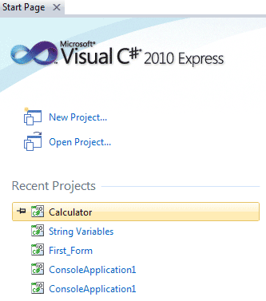
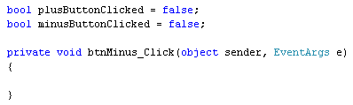
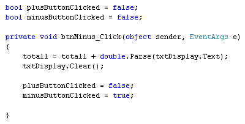
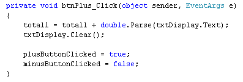
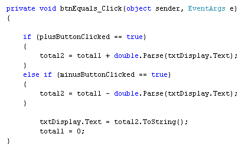
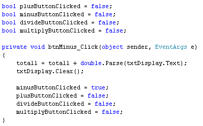

Else ... If statements in C# .NET
<< Continues from the previous lesson
Instead of using just the else word, you can use else if, instead. If we use our calculator as an example, we'd want to do this:
bool plusButtonClicked = true;
bool minusButtonClicked = false;
if (plusButtonClicked = = true)
{
//WRITE CODE TO ADD UP HERE
}
else if (minusButtonClicked = = true)
{
//WRITE CODE TO SUBTRACT HERE
}
So the code checks to see which button was clicked. If it's the Plus Button, then the first IF Statement gets executed. If it's the Minus Button, then the second IF Statement gets executed.
But else if is just the same as if, but with the word else at the start.
In fact, we can now add a minus button to our calculator. We'll use else if.
So open up your calculator project again. To do this, click the link on the Start Page Tab in Visual C#. If you can't see your Start Page tab, click its icon at the top of the C# software:
(In version 2012, click View > Start Page from the menu at the top.)
You should then see a section headed Recent Projects:

Look for your calculator project here. You can also click File > Recent Projects from the menu bar at the top.
If both of those fail, click File > Open Project. Navigate to where you saved your project. Open up the file that ends in .sln.
With your calculator project open, add a new button. Set the following properties for it in the Properties Window:
Name: btnMinus
Font: Microsoft Sans Serif, 16, Bold
Location: Move it to the right of your Plus button
Size: 49, 40
Text: -
Now double click your Minus button to get at its code. Add the following two Boolean variables outside of the Minus button code, just above it:
bool plusButtonClicked = true;
bool minusButtonClicked = false;
You coding window will then look like this:

Now add the following code inside of the Minus button:
total1 = total1 + double.Parse(txtDisplay.Text);
txtDisplay.Clear( );
plusButtonClicked = false;
minusButtonClicked = true;
Your coding window will then look like the one below:

All we've done here is to set up two Boolean variables. We've set them both to false outside of the code. (They have been set up outside of the code because other buttons need to be able to use them; they have been set to false because no button has been clicked yet.) When the Minus button is clicked, we'll set the Boolean variable minusButtonClicked to true and the plusButtonClicked to false.
But the first two lines are exactly the same as for the Plus button:
total1 = total1 + double.Parse(txtDisplay.Text);
txtDisplay.Clear( );
The first line just moves the numbers from the text box into the total1 variable. The second line clears the text box.
Now access the code for your Plus button. Add two lines of code to the end:

So the only thing you are adding is this:
plusButtonClicked = true;
minusButtonClicked = false;
The Plus button resets the Boolean variables. This time, plusButtonClicked gets set to true, and minusButtonClicked gets set to false. It was the other way round for the Minus button.
The reason we're resetting these Booleans variables is because we can use them in an if else statement. We can add up if the plusButtonClicked variable is true, and subtract if minusButtonClicked is true.
We'll still do the calculating in the Equals button. So change your equals button to this:

We're using Conditional Logic to decide which of the two buttons was clicked. The first IF statement checks if the plusButtonClicked variable is true. If it is, then the addition gets done (this is exactly the same as before). If the first IF Statement is false, then C# moves down to the else if statement. If minusButtonClicked is true, then the subtraction gets done instead. The only difference between the addition and subtraction lines is the Operator symbols: a plus (+) instead of a minus (-).
The final two lines of code are the same as before - convert the number to text and display it in the text box, and then reset the total1 variable to zero.
Run your calculator and try it out. You should be able to add and subtract!
Exercise D
Finish your calculator by adding Divide and Multiply buttons to your form. Write
the code to make your calculator Divide and Multiply.
For this exercise, you're just adding two more Boolean variables to your code. You can then add more else if statements below the ones you already have. You'll also need to add two more lines to the code for your four Operator buttons. These two lines need to reset the Boolean variables to either true or false. For example, here's the code for the Minus button to get your started:

So we now have four Boolean variables outside the button code, one for the plus button, one for minus button, one for divide button, and one for the multiply button. When you click a button, its Boolean variable gets set to true.
Do the same for the other three buttons. Then write your else if statements. This is quite a tricky exercise, though. Probably your hardest so far!
In the next lesson, we'll look at something called Switch Statements.